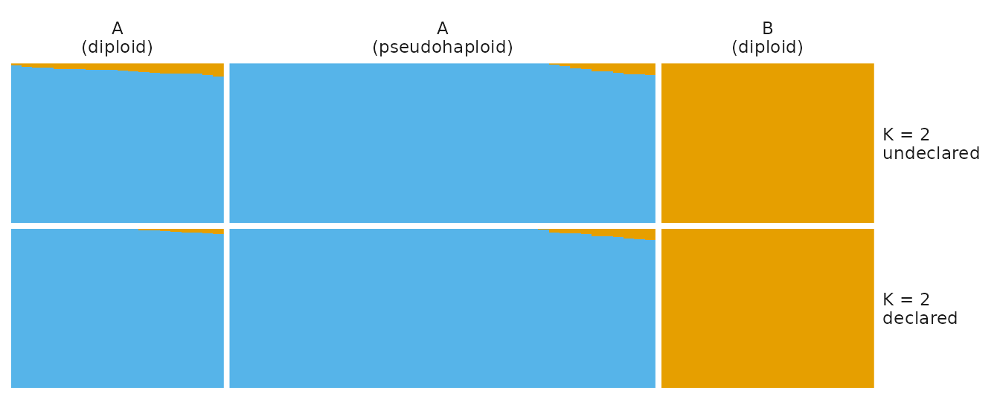
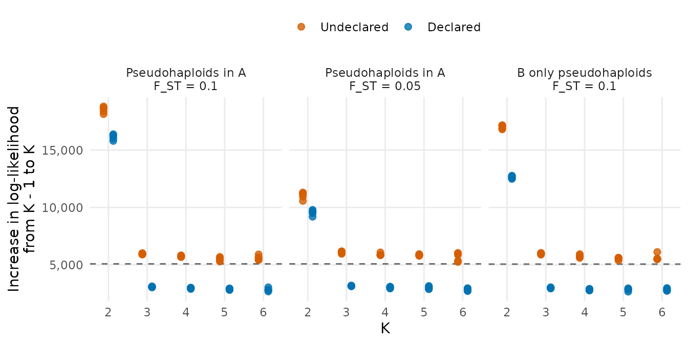
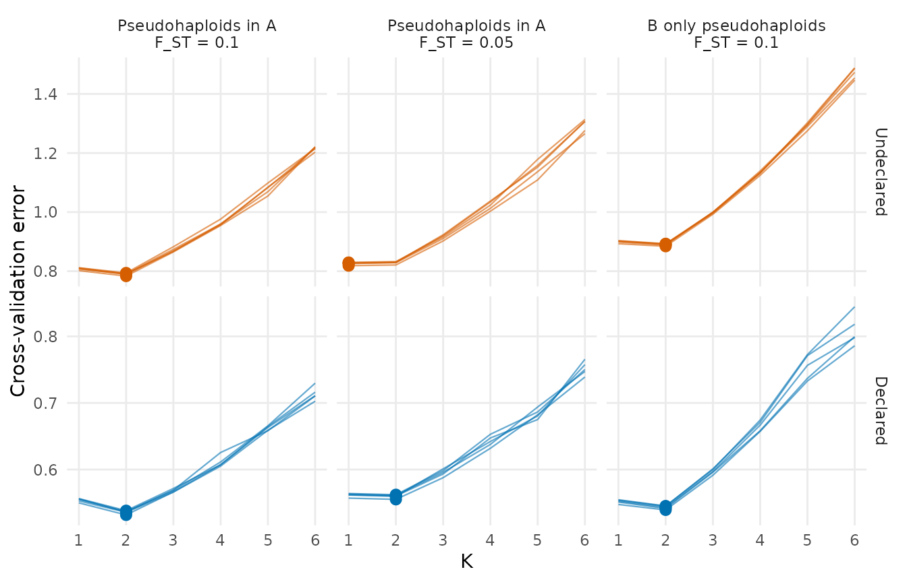
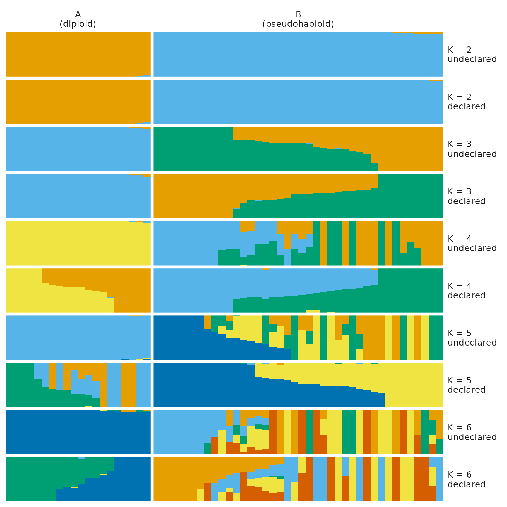
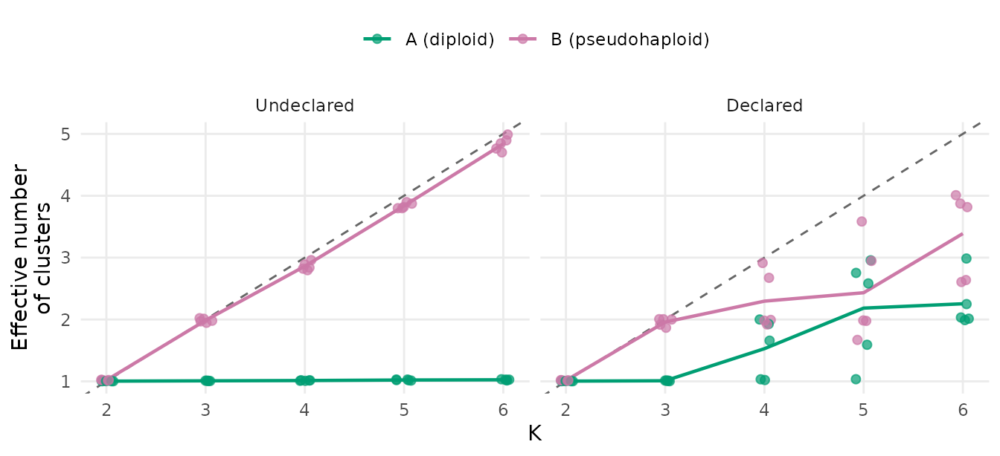

pseudohaploids.RmdIn low-coverage data, such as most ancient genomes, diploid genotypes
cannot be called reliably. A common approach is to draw a single read at
random at each site, and to record the allele that it carries: the
individual is then “pseudohaploid”, with one allele per locus.
tidypopgen stores such an allele as a homozygous genotype
(0 or 2), and tidypopgen::gt_pseudohaploid() marks the
individuals with no heterozygous genotypes as pseudohaploids (with a
ploidy of 1). gt_radmix(), which estimates ancestry
proportions with the method of ADMIXTURE (Alexander et al. 2009), using
a modified version of the algorithm of OpenADMIXTURE (Ko et al. 2023) to
which we added the cross-validation of ADMIXTURE, then counts a single
copy of the allele for each of their genotypes.
If the pseudohaploids are not declared, each of their genotypes counts as two copies of the same allele, as if every read had been seen twice. This is also what happens with programs that assume diploid genotypes, such as OpenADMIXTURE.jl, and ADMIXTURE for the autosomes. This article uses simulated data to show the consequences:
All of these disappear once the pseudohaploids are declared with
gt_pseudohaploid().
The first sections analyse a single simulated dataset, with code that runs in a few seconds. The later sections summarise replicated simulations, run with a script described in How the replicated simulations were run.
The simulations follow the model of ADMIXTURE, with unadmixed individuals from a few populations:
n_loci
independent loci is drawn from a uniform distribution between 0.05 and
0.95, in a common ancestral population.p as its mean and a variance of
fst * p * (1 - p). The larger fst, the more
the populations differ.There are no missing genotypes, no linkage between loci, and no
admixture, so the true number of clusters is the number of populations.
The function simulate_pseudohaploids() implements these
steps. The populations and their numbers of diploid and pseudohaploid
individuals are given as named vectors. It returns a
gen_tibble in which the pseudohaploids are coded 0/2 but
not declared, as when they are read from a file (with the true allele
frequencies of the populations in its attribute “frequencies”):
# Simulate diploid and pseudohaploid individuals from a few populations.
# n_diploid and n_pseudohaploid are named vectors with the number of
# individuals of each population (a population missing from one of them has
# none of that type), e.g. n_diploid = c(A = 20, B = 20) and
# n_pseudohaploid = c(A = 40). The allele frequencies of each population
# drift from those of a common ancestral population (with the given F_ST).
# Returns a gen_tibble with the columns id, population and type ("diploid" or
# "pseudohaploid"), in which the pseudohaploids are coded 0/2 but not
# declared as pseudohaploids, as when they are read from a file. The true
# allele frequencies of the populations (a matrix with one row per locus and
# one column per population) are in its attribute "frequencies"
simulate_pseudohaploids <- function(n_diploid, n_pseudohaploid = c(),
n_loci = 5000, fst = 0.1, seed = NULL) {
if (!is.null(seed)) {
set.seed(seed)
}
populations <- union(names(n_diploid), names(n_pseudohaploid))
# the number of individuals of a population in n (0 if it is not in n)
count <- function(n, pop) if (pop %in% names(n)) n[[pop]] else 0
# the frequency of the alternate allele of each locus in the ancestral
# population
p_ancestral <- stats::runif(n_loci, 0.05, 0.95)
frequencies <- list()
genotypes <- list()
indiv_meta <- list()
for (pop in populations) {
# the frequencies in this population, drifted from the ancestral ones
# (Balding-Nichols model: a beta distribution with mean p_ancestral and
# variance fst * p_ancestral * (1 - p_ancestral))
p_pop <- frequencies[[pop]] <- stats::rbeta(
n_loci,
p_ancestral * (1 - fst) / fst,
(1 - p_ancestral) * (1 - fst) / fst
)
# n individuals with `copies` copies of each locus, each copy carrying
# the alternate allele with probability p_pop (one row per individual)
draw <- function(n, copies) {
matrix(
stats::rbinom(n * n_loci, copies, p_pop),
ncol = n_loci, byrow = TRUE
)
}
# a diploid carries two copies; a pseudohaploid carries one, stored as a
# homozygous genotype (0 or 2), as in tidypopgen
n_dip <- count(n_diploid, pop)
n_pseudo <- count(n_pseudohaploid, pop)
genotypes[[pop]] <- rbind(draw(n_dip, 2), 2 * draw(n_pseudo, 1))
indiv_meta[[pop]] <- data.frame(
population = rep(pop, n_dip + n_pseudo),
type = rep(c("diploid", "pseudohaploid"), c(n_dip, n_pseudo))
)
}
indiv_meta <- do.call(rbind, indiv_meta)
indiv_meta <- data.frame(
id = paste0("ind", seq_len(nrow(indiv_meta))),
indiv_meta
)
loci <- data.frame(
name = paste0("rs", seq_len(n_loci)),
chromosome = 1L,
position = seq_len(n_loci),
genetic_dist = 0,
allele_ref = "A",
allele_alt = "T"
)
gt <- tidypopgen::gen_tibble(
do.call(rbind, genotypes),
indiv_meta = indiv_meta,
loci = loci,
backingfile = tempfile("pseudohaploids_"),
quiet = TRUE
)
attr(gt, "frequencies") <- do.call(cbind, frequencies)
gt
}The function is in
vignettes/articles/code/pseudohaploid_simulation.R (in the
source code of the package), and can be loaded with
source() to simulate other designs.
As a first example, we simulate two populations, A and B, with an F_ST of 0.1 from their ancestor, typed at 5,000 loci: 20 diploids from each population, and 40 pseudohaploids from population A.
gt <- simulate_pseudohaploids(
n_diploid = c(A = 20, B = 20),
n_pseudohaploid = c(A = 40),
fst = 0.1,
seed = 1
)
gt
#> # A gen_tibble: 5000 loci
#> # A tibble: 80 × 4
#> id population type genotypes
#> <chr> <chr> <chr> <vctr_SNP>
#> 1 ind1 A diploid [0,1,...]
#> 2 ind2 A diploid [0,0,...]
#> 3 ind3 A diploid [0,0,...]
#> 4 ind4 A diploid [1,0,...]
#> 5 ind5 A diploid [0,2,...]
#> 6 ind6 A diploid [0,0,...]
#> 7 ind7 A diploid [0,1,...]
#> 8 ind8 A diploid [0,1,...]
#> 9 ind9 A diploid [0,1,...]
#> 10 ind10 A diploid [0,1,...]
#> # ℹ 70 more rows
table(gt$population, gt$type)
#>
#> diploid pseudohaploid
#> A 20 40
#> B 20 0The pseudohaploids have no heterozygous genotypes:
heterozygosity <- rowMeans(show_genotypes(gt) == 1)
tapply(heterozygosity, gt$type, mean)
#> diploid pseudohaploid
#> 0.323615 0.000000and gt_pseudohaploid() finds them:
gt_declared <- gt_pseudohaploid(gt)
table(type = gt$type, ploidy = indiv_ploidy(gt_declared))
#> ploidy
#> type 1 2
#> diploid 0 40
#> pseudohaploid 40 0We fit the true model (K = 2) twice: once with the pseudohaploids treated as diploids (undeclared), and once with them declared:
fit_undeclared <- gt_radmix(gt, k = 2, seed = 1)
fit_declared <- gt_radmix(gt_declared, k = 2, seed = 1)
c(undeclared = fit_undeclared$loglik, declared = fit_declared$loglik)
#> undeclared declared
#> -382540.8 -286929.4The two log-likelihoods are very different. In the model of
ADMIXTURE, the genotype g of an individual at a locus is
the number of copies of the alternate allele among its n
copies (2 for a diploid, 1 for a pseudohaploid), and is binomial, with a
probability qp = sum_k q_k p_k (where q_k is
the proportion of the ancestry of the individual from cluster
k, and p_k the frequency of the allele in that
cluster). Its contribution to the log-likelihood is
g log(qp) + (n - g) log(1 - qp)A pseudohaploid that carries the allele has g = 1 out of
n = 1, and contributes log(qp). Undeclared, it
has g = 2 out of n = 2, and contributes
2 log(qp): the log-likelihood of every pseudohaploid is
exactly doubled. We can check this by computing the log-likelihood of
each individual from the estimates of the declared fit:
# the log-likelihood of each individual, given the ancestry proportions q
# (individuals x K), the allele frequencies p (loci x K) and the number of
# allele copies of each individual
loglik_individuals <- function(gt, q, p, n_copies) {
# copies of the alternate allele out of n_copies (the pseudohaploids are
# coded 0/2)
copies <- show_genotypes(gt) * n_copies / 2
qp <- q %*% t(p)
rowSums(copies * log(qp) + (n_copies - copies) * log(1 - qp))
}
q <- unclass(fit_declared$Q[[1]])
p <- fit_declared$P[[1]]
loglik_declared <- loglik_individuals(gt, q, p, indiv_ploidy(gt_declared))
loglik_undeclared <- loglik_individuals(gt, q, p, n_copies = 2)
# the total for the declared pseudohaploids is that of the fit
c(by_hand = sum(loglik_declared), fit = fit_declared$loglik)
#> by_hand fit
#> -286929.4 -286929.4
# the log-likelihood of each type of individual, with the same estimates
rbind(
declared = tapply(loglik_declared, gt$type, sum),
undeclared = tapply(loglik_undeclared, gt$type, sum)
)
#> diploid pseudohaploid
#> declared -190883.9 -96045.54
#> undeclared -190883.9 -192091.08The diploids contribute the same, and the pseudohaploids twice as much when undeclared. The model believes it has twice as much information about the pseudohaploids as it really has. The rest of this article shows the consequences.
The ancestry proportions of the pseudohaploids, given the allele frequencies, maximise their own log-likelihood, and doubling it does not move its maximum. However, the pseudohaploids also affect the allele frequencies of the clusters, and through them the ancestry of the other individuals:
# the ancestry proportions of a gt_admix object with a single run, as a
# data frame with one row per individual and cluster
q_long <- function(fit, gt, treatment) {
q <- unclass(fit$Q[[1]])
data.frame(
treatment = treatment,
k = fit$k,
id = gt$id,
population = gt$population,
type = gt$type,
cluster = rep(seq_len(ncol(q)), each = nrow(q)),
q = as.vector(q)
)
}
# one colour per cluster (from the Okabe-Ito palette); the numbering of the
# clusters, and hence their colours, is arbitrary in each fit
cluster_colours <- c(
"#E69F00", "#56B4E9", "#009E73", "#F0E442", "#0072B2", "#D55E00"
)
# bar plot of the ancestry proportions of each individual (from q_long()),
# with one row of panels per K and per treatment, and the individuals
# grouped by population and type, and sorted within each group by their
# ancestry from the main cluster of the group
plot_q <- function(q) {
# one row of panels per K and treatment, undeclared first
rows <- paste0(
"K = ", rep(sort(unique(q$k)), each = 2), "\n",
c("undeclared", "declared")
)
q <- q %>%
mutate(
group = paste0(.data$population, "\n(", .data$type, ")"),
row = factor(paste0("K = ", .data$k, "\n", .data$treatment), rows)
) %>%
group_by(.data$treatment, .data$k, .data$group, .data$cluster) %>%
mutate(cluster_mean = mean(.data$q)) %>%
group_by(.data$treatment, .data$k, .data$group) %>%
mutate(
main_cluster = .data$cluster[which.max(.data$cluster_mean)]
) %>%
group_by(.data$treatment, .data$k, .data$id) %>%
mutate(main_q = .data$q[.data$cluster == .data$main_cluster[1]]) %>%
group_by(.data$treatment, .data$k) %>%
arrange(.data$group, desc(.data$main_q), .data$id, .by_group = TRUE) %>%
mutate(individual = match(.data$id, unique(.data$id))) %>%
ungroup()
ggplot(q, aes(
x = .data$individual, y = .data$q, fill = factor(.data$cluster)
)) +
geom_col(width = 1) +
facet_grid(
row ~ group,
scales = "free_x",
space = "free_x"
) +
scale_fill_manual(values = cluster_colours, guide = "none") +
scale_x_continuous(breaks = NULL, expand = c(0, 0)) +
scale_y_continuous(breaks = NULL, expand = c(0, 0)) +
labs(x = NULL, y = NULL) +
theme_minimal() +
theme(
panel.spacing = unit(0.2, "lines"),
strip.text.y = element_text(angle = 0, hjust = 0)
)
}
plot_q(rbind(
q_long(fit_undeclared, gt, "undeclared"),
q_long(fit_declared, gt, "declared")
))
Declared, every individual is assigned almost entirely to the cluster of its population. A few individuals of A get a little ancestry from the cluster of B, and none of B from that of A, but this is due to the larger sample of A (60 individuals against 20), not to its pseudohaploids (see Why population A looks slightly admixed). Undeclared, the pseudohaploids still are, but the diploids of population A appear slightly admixed with population B. Treated as diploids, the pseudohaploids are homozygous at every locus, which the model can only partly explain, with allele frequencies closer to 0 and 1. As they make up most of the information on population A (counted twice, they carry 80 of its 120 allele copies per locus), the cluster of population A takes more extreme frequencies than those of the population. The diploids of population A, which do carry heterozygotes, then fit better as a mixture of this cluster with that of population B.
The replicated simulations (see Choosing K for their design) show the same bias, which is stronger when the structure is weak. The table gives the mean ancestry of each group of individuals from the cluster of the other population, at K = 2:
| Scenario | Population | Type | Undeclared (%) | Declared (%) |
|---|---|---|---|---|
| Pseudohaploids in A, F_ST = 0.1 | A | diploid | 5.3 | 1.0 |
| Pseudohaploids in A, F_ST = 0.1 | A | pseudohaploid | 1.2 | 1.3 |
| Pseudohaploids in A, F_ST = 0.1 | B | diploid | 0.2 | 0.3 |
| Pseudohaploids in A, F_ST = 0.05 | A | diploid | 12.4 | 3.1 |
| Pseudohaploids in A, F_ST = 0.05 | A | pseudohaploid | 3.3 | 3.0 |
| Pseudohaploids in A, F_ST = 0.05 | B | diploid | 1.0 | 1.1 |
| B only pseudohaploids, F_ST = 0.1 | A | diploid | 0.2 | 0.2 |
| B only pseudohaploids, F_ST = 0.1 | B | pseudohaploid | 0.9 | 0.7 |
Undeclared pseudohaploids make the diploids of their population appear four to five times more admixed than when the pseudohaploids are declared. The pseudohaploids themselves, and the other population, are unaffected. There is no bias when a population is made only of pseudohaploids (the third scenario), as there are no diploids in it to appear admixed.
Even when the pseudohaploids are declared, the individuals of population A get a little more ancestry from the other cluster than those of B. As explained below, this is not due to the pseudohaploids.
The ancestry of an individual is estimated from a finite number of
loci, and cannot be negative, so the noise of the estimate shows up as a
little ancestry from the other cluster, even in an unadmixed individual.
In the scenarios above, this is larger in population A than in B. Two
differences between them could explain this: A has more individuals (60
against 20), and two thirds of them are pseudohaploids, whose ancestry
is estimated with more noise, as they carry half as many allele copies
as diploids. To separate the two, we simulated two populations of
different or equal sizes, with and without pseudohaploids (F_ST = 0.1,
10 replicates). We fitted K = 2 with the allele frequencies estimated,
as usual, and with them fixed at their true values (the attribute
“frequencies” of the simulated data, given to gt_radmix()
with init_p and fix_p = TRUE):
| Simulated individuals | Population | Type | Undeclared (%) | Declared (%) | Declared, true frequencies (%) |
|---|---|---|---|---|---|
| A: 20 diploids; B: 20 diploids | A | diploid | - | 0.2 | 0.6 |
| B | diploid | - | 0.3 | 0.6 | |
| A: 60 diploids; B: 20 diploids | A | diploid | - | 1.1 | 0.6 |
| B | diploid | - | 0.3 | 0.7 | |
| A: 20 diploids and 40 pseudohaploids; B: 20 diploids (the first scenario) | A | diploid | 5.1 | 1.1 | 0.6 |
| A | pseudohaploid | 1.2 | 1.5 | 0.9 | |
| B | diploid | 0.2 | 0.2 | 0.7 | |
| A: 20 diploids and 40 pseudohaploids; B: 60 diploids | A | diploid | 4.7 | 1.0 | 0.6 |
| A | pseudohaploid | 1.0 | 1.3 | 0.9 | |
| B | diploid | 0.9 | 0.9 | 0.6 |
So, when the pseudohaploids are declared, the slight admixture of population A comes mostly from its larger sample, and only a little from its pseudohaploids. It is a property of the maximum-likelihood estimates of the model of ADMIXTURE, with or without pseudohaploids, and the differences are small (about 1%).
The replicated simulations have 5 replicates of each of three scenarios, each with two populations (so the true K is 2), and 5,000 loci:
Each dataset is analysed with gt_radmix() for K = 1 to
6, with cross-validation, with its pseudohaploids undeclared and
declared.
Adding a cluster always increases the log-likelihood, as the extra
parameters can fit some of the noise of the sample. Criteria based on
the log-likelihood, such as AIC, only add a cluster if the increase is
large enough. AIC is
-2 log-likelihood + 2 x (number of parameters), and each
cluster adds the allele frequencies of every locus and an ancestry
proportion for every individual, so a cluster lowers AIC if it increases
the log-likelihood by more than the number of loci plus the number of
individuals:

Each point is a replicate, and the dashed line is the increase that a cluster needs to lower AIC. The second cluster, which separates the two populations, increases the log-likelihood far above the line with both treatments. Further clusters only fit noise. Declared, they gain little more than half of what AIC requires; undeclared, the noise of the pseudohaploids counts twice, and every further cluster passes the line.
Cross-validation (Alexander & Lange 2011) holds out a fold of the genotypes, fits the model to the others, and scores the predictions of the held-out genotypes. A cluster that fits noise does not predict new genotypes better, so the cross-validation error stops decreasing at the true K, whatever the size of the log-likelihood:

Each line is a replicate, and the large points mark the K with the lowest error. The number of replicates in which each criterion picks each K:
| Scenario | Pseudohaploids | Best K by AIC | Best K by cross-validation |
|---|---|---|---|
| Pseudohaploids in A, F_ST = 0.1 | Undeclared | 6 (5) | 2 (5) |
| Pseudohaploids in A, F_ST = 0.1 | Declared | 2 (5) | 2 (5) |
| Pseudohaploids in A, F_ST = 0.05 | Undeclared | 6 (5) | 1 (5) |
| Pseudohaploids in A, F_ST = 0.05 | Declared | 2 (5) | 2 (5) |
| B only pseudohaploids, F_ST = 0.1 | Undeclared | 6 (5) | 2 (5) |
| B only pseudohaploids, F_ST = 0.1 | Declared | 2 (5) | 2 (5) |
With moderate structure (F_ST = 0.1), cross-validation picks the true K with both treatments, whereas AIC picks the largest K tested when the pseudohaploids are undeclared.
The cross-validation errors themselves are much larger when the
pseudohaploids are undeclared (note the different scales of the plot):
each held-out pseudohaploid genotype is scored as two copies of the same
allele, which a diploid prediction rarely expects. The errors can only
be compared between values of K of the same analysis, not between
analyses that treat the pseudohaploids differently (e.g. ADMIXTURE and
gt_radmix() on declared pseudohaploids).
With weaker structure (F_ST = 0.05), cross-validation picks K = 1 when the pseudohaploids are undeclared, missing the two populations, and K = 2 when they are declared. At K = 2, the allele frequencies of the cluster of population A are a compromise between its diploids, which carry heterozygotes, and its undeclared pseudohaploids, which do not (see Ancestry proportions at the true K). The model then predicts the held-out genotypes of the pseudohaploids worse than at K = 1, where a single cluster cannot explain the lack of heterozygotes anyway, and its allele frequencies are simply those of the whole sample. These errors count twice, and when the structure is weak they outweigh the gain from separating the two populations. (We checked this by splitting the cross-validation error by group of individuals, in the first replicate of each design.)
To see when this happens, we simulated 20 diploids from each population, with 0 to 80 pseudohaploids from population A, for three values of F_ST, and compared the cross-validation errors of K = 1 and K = 2 (5 replicates of each combination):
| Pseudohaploids | Number of pseudohaploids | F_ST = 0.03 | F_ST = 0.05 | F_ST = 0.1 |
|---|---|---|---|---|
| Undeclared | 0 | 0/5 | 0/5 | 5/5 |
| Undeclared | 20 | 0/5 | 0/5 | 5/5 |
| Undeclared | 40 | 0/5 | 0/5 | 5/5 |
| Undeclared | 80 | 0/5 | 5/5 | 5/5 |
| Declared | 0 | 0/5 | 0/5 | 5/5 |
| Declared | 20 | 0/5 | 1/5 | 5/5 |
| Declared | 40 | 0/5 | 5/5 | 5/5 |
| Declared | 80 | 0/5 | 5/5 | 5/5 |
At F_ST = 0.03, cross-validation misses the structure even without pseudohaploids, and at F_ST = 0.1 it always finds it. In between, declared pseudohaploids add information, and 40 of them are enough for cross-validation to detect the two populations in every replicate. Undeclared, 20 or 40 pseudohaploids hide the structure. With 80, cross-validation finds it again: the cluster of population A then fits its pseudohaploids, which make up most of it (its diploids appear admixed instead), and at K = 1 the allele frequencies of the whole sample, dominated by population A, predict population B poorly. Whether undeclared pseudohaploids hide weak structure thus depends on the composition of the sample.
Ancestry is often shown for a range of K, including values larger than the one picked by cross-validation, and AIC picks the largest K tested when the pseudohaploids are undeclared. Beyond the true K, the extra clusters split the populations into arbitrary groups, which fit the noise of the sample. When a population is known only from pseudohaploids, where these “ghost” clusters fall depends on whether the pseudohaploids are declared. In the first replicate of that scenario (20 diploids from population A and 40 pseudohaploids from population B):

Declared, the 20 diploids of population A and the 40 pseudohaploids of population B carry the same number of allele copies per locus (40). The first ghost cluster splits population B, which has more individuals, but the following ones are shared between the two populations. Undeclared, all the ghost clusters fall within population B, splitting the pseudohaploids into groups that do not exist, whereas population A remains a single cluster. Each ghost cluster lets some of the pseudohaploids have more extreme allele frequencies, which explains part of their lack of heterozygotes, and its gain counts twice.
Over all the replicates, we measure how many clusters each population
is spread over by the effective number of clusters,
1 / sum_k m_k^2, where m_k is the mean
ancestry of the population from cluster k. It is 1 for a
population assigned to a single cluster, and K for a population spread
evenly over K clusters:

Each point is a replicate, and the lines join the means. The dashed line marks K - 1 clusters, all but one of the K clusters. Undeclared, in every replicate, the pseudohaploid population is spread over almost all the clusters but one, and the diploid population stays in that one; declared, the two populations share the ghost clusters from K = 4. An analysis with undeclared pseudohaploids would suggest structure among the ancient samples, and none in the modern ones, when neither has any.
gt_pseudohaploid() before
running gt_radmix(), and check the result with
indiv_ploidy(). A diploid is only mistaken for a
pseudohaploid if it has no heterozygous genotype among the loci tested
(test_n_loci, 10,000 by default).The replicated simulations are run with the script
vignettes/articles/code/pseudohaploid_runs.R (in the source
code of the package), which saves its results in
vignettes/articles/data/pseudohaploids; this article reads
them from there. The code below is taken from that script. It uses the
simulator described in Simulating the
data:
library(tidygenclust)
library(tidypopgen)
source("code/pseudohaploid_simulation.R")
start_time <- Sys.time()
out_dir <- "data/pseudohaploids"
dir.create(out_dir, recursive = TRUE, showWarnings = FALSE)
# each replicate simulates a dataset with its own seed (also used for the
# fits), so every dataset can be simulated again on its own
replicates <- 1:5
n_cores <- min(4L, parallel::detectCores())Each dataset is analysed for each K, with cross-validation (5 folds), with its pseudohaploids undeclared and declared:
# Analyse a dataset for each value of k, with cross-validation, twice: with
# the pseudohaploids undeclared (treated as diploids) and declared with
# gt_pseudohaploid(). Returns the log-likelihood and cross-validation error
# of each fit (fits), and, if with_q is TRUE, the ancestry proportions of
# each individual for each k > 1 (q, in long format)
analyse <- function(gt, k, seed, with_q = FALSE) {
fits <- list()
q <- list()
for (treatment in c("undeclared", "declared")) {
x <- if (treatment == "declared") gt_pseudohaploid(gt) else gt
adm <- gt_radmix(
x,
k = k,
seed = seed,
crossval = TRUE,
n_cores = n_cores
)
fits[[treatment]] <- data.frame(
treatment = treatment,
k = adm$k,
loglik = adm$loglik,
cv = adm$cv
)
if (with_q) {
for (i in which(adm$k > 1)) {
q_i <- unclass(adm$Q[[i]])
q[[paste(treatment, i)]] <- data.frame(
treatment = treatment,
k = adm$k[i],
id = gt$id,
population = gt$population,
type = gt$type,
cluster = rep(seq_len(ncol(q_i)), each = nrow(q_i)),
q = round(as.vector(q_i), 4)
)
}
}
}
list(fits = do.call(rbind, fits), q = do.call(rbind, q))
}The three scenarios are analysed for K = 1 to 6:
# three scenarios, all with 5,000 loci and two populations (so the true K is
# 2): pseudohaploids in one of the two populations, with moderate (F_ST =
# 0.1) or weak (F_ST = 0.05) structure; and a population known only from
# pseudohaploids (e.g. ancient samples), next to a diploid population
scenarios <- list(
pseudohaploids_in_a = list(
n_diploid = c(A = 20, B = 20), n_pseudohaploid = c(A = 40), fst = 0.1
),
weak_structure = list(
n_diploid = c(A = 20, B = 20), n_pseudohaploid = c(A = 40), fst = 0.05
),
b_pseudohaploid = list(
n_diploid = c(A = 20), n_pseudohaploid = c(B = 40), fst = 0.1
)
)
# each scenario is analysed for K = 1 to 6
fits <- list()
q <- list()
for (scenario in names(scenarios)) {
for (replicate in replicates) {
message("Scenario ", scenario, ", replicate ", replicate)
s <- scenarios[[scenario]]
gt <- simulate_pseudohaploids(
n_diploid = s$n_diploid,
n_pseudohaploid = s$n_pseudohaploid,
fst = s$fst,
seed = replicate
)
res <- analyse(gt, k = 1:6, seed = replicate, with_q = TRUE)
run <- paste(scenario, replicate)
fits[[run]] <- data.frame(scenario, replicate, res$fits)
q[[run]] <- data.frame(scenario, replicate, res$q)
}
}
fits <- do.call(rbind, fits)
q <- do.call(rbind, q)the grid of conditions for K = 1 and 2 only:
# when does cross-validation prefer K = 2 over K = 1? 20 diploids from each
# population, and 0 to 80 pseudohaploids from population A, with weak to
# moderate structure (K = 1 and 2 only)
grid <- expand.grid(
fst = c(0.03, 0.05, 0.1),
n_pseudohaploid = c(0, 20, 40, 80),
replicate = replicates
)
grid_fits <- list()
for (i in seq_len(nrow(grid))) {
message("Grid ", i, " of ", nrow(grid))
gt <- simulate_pseudohaploids(
n_diploid = c(A = 20, B = 20),
n_pseudohaploid = c(A = grid$n_pseudohaploid[i]),
fst = grid$fst[i],
seed = grid$replicate[i]
)
res <- analyse(gt, k = 1:2, seed = grid$replicate[i])
grid_fits[[i]] <- data.frame(grid[i, ], res$fits, row.names = NULL)
}
grid_fits <- do.call(rbind, grid_fits)and the designs with populations of different sizes, at K = 2, with the allele frequencies estimated or fixed at their true values:
# why do the individuals of the larger population appear slightly admixed
# at K = 2? Two populations of different or equal sizes, with or without
# pseudohaploids, fitted at K = 2 with the allele frequencies estimated (with
# the pseudohaploids undeclared and declared), and with the allele
# frequencies fixed at their true values (pseudohaploids declared)
sample_size_designs <- list(
equal = list(n_diploid = c(A = 20, B = 20), n_pseudohaploid = c()),
a_larger = list(n_diploid = c(A = 60, B = 20), n_pseudohaploid = c()),
pseudohaploids_in_a = list(
n_diploid = c(A = 20, B = 20), n_pseudohaploid = c(A = 40)
),
b_larger = list(n_diploid = c(A = 20, B = 60), n_pseudohaploid = c(A = 40))
)
# more replicates than above, as the differences are small
sample_size_replicates <- 1:10
sample_size <- list()
for (design in names(sample_size_designs)) {
for (replicate in sample_size_replicates) {
message("Design ", design, ", replicate ", replicate)
d <- sample_size_designs[[design]]
gt <- simulate_pseudohaploids(
n_diploid = d$n_diploid,
n_pseudohaploid = d$n_pseudohaploid,
fst = 0.1,
seed = replicate
)
fit <- function(x, frequencies) {
adm <- gt_radmix(
x,
k = 2,
seed = replicate,
n_cores = n_cores,
init_p = if (frequencies == "true") attr(gt, "frequencies"),
fix_p = frequencies == "true"
)
q_i <- unclass(adm$Q[[1]])
# the cluster of each population: with the true frequencies, the
# column of the population; otherwise, the cluster with the largest
# mean ancestry among its individuals
own <- if (frequencies == "true") {
c(A = 1, B = 2)
} else {
sapply(c(A = "A", B = "B"), function(pop) {
unname(which.max(colMeans(q_i[gt$population == pop, ])))
})
}
own <- own[gt$population]
# the mean ancestry of each group from the other cluster
other <- 1 - q_i[cbind(seq_len(nrow(q_i)), own)]
data.frame(
design = design,
replicate = replicate,
frequencies = frequencies,
stats::aggregate(
list(other = other),
list(population = gt$population, type = gt$type),
mean
)
)
}
runs <- list(
fit(gt_pseudohaploid(gt), "estimated"),
fit(gt_pseudohaploid(gt), "true")
)
runs[[1]]$treatment <- runs[[2]]$treatment <- "declared"
if (length(d$n_pseudohaploid) > 0) {
runs[[3]] <- fit(gt, "estimated")
runs[[3]]$treatment <- "undeclared"
}
sample_size[[paste(design, replicate)]] <- do.call(rbind, runs)
}
}
sample_size <- do.call(rbind, sample_size)To run the simulations again (e.g. after changing
tidygenclust), install tidygenclust with
R CMD INSTALL, rather than loading it with
devtools::load_all(), which compiles its C++ code without
optimisation, and run, from vignettes/articles:
This takes about half an hour on 4 cores. Then render this article again.
The results shown here were obtained with:
| date | 2026-10-30 |
| R | R version 4.6.1 (2026-06-24) |
| tidygenclust | 0.1.5.9003 |
| tidypopgen | 0.4.4.9008 |
Alexander, D. H., Novembre, J. & Lange, K. (2009). Fast model-based estimation of ancestry in unrelated individuals. Genome Research, 19, 1655-1664.
Alexander, D. H. & Lange, K. (2011). Enhancements to the ADMIXTURE algorithm for individual ancestry estimation. BMC Bioinformatics, 12, 246.
Balding, D. J. & Nichols, R. A. (1995). A method for quantifying differentiation between populations at multi-allelic loci and its implications for investigating identity and paternity. Genetica, 96, 3-12.
Ko, S., Chu, B. B., Peterson, D., Okenwa, C., Papp, J. C., Alexander, D. H., Sobel, E. M., Zhou, H. & Lange, K. L. (2023). Unsupervised discovery of ancestry informative markers and genetic admixture proportions in biobank-scale datasets. The American Journal of Human Genetics, 110, 314-325.